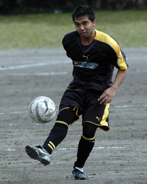
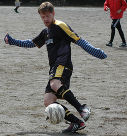
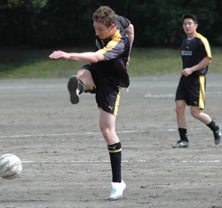
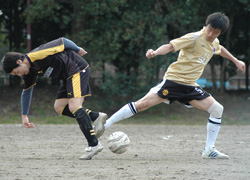
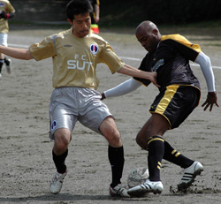
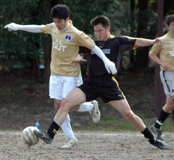

|
Oi Futo Dai Ichi, Saturday 7th March
Friday afternoon, 2.28pm - the odds were stacked heavily against this game even going ahead. As Sid prepared for his latest driving ban he remained adamant that the clouds would disappear and 28mm of rain would somehow drain from the sandy oi futo surface.
Saturday morning, 8.00am. A clear day overlooks Tokyo, surely it's on. My bet is that 12 out of the 15 turn up, and 4 of them are hungover.
11.00am - Sun Utd have 11 and we have 14! We lined up unbeaten in 6 league games and confident of winning. With a back 3 of Saco, Andy and Alan I was sure that they would have a tough time breaking us down or getting behind us.
The game started and the Panthers were camped in the Sun Utd half, I can only remember our goalkeeper Kieran touching the ball once in the first half, from a back pass from the half way line, seemingly we felt bad for giving him nothing to do. Kei and Rick started in midfield playing in front of the defence and swept up anything that they tossed forward. Once again the team looked balanced and used the big pitch well with Kev Gray and Mikhail playing wide and stretching Sun Utd.

Up front we started with Sid and Scott Tullis, hoping to make the most of their chance as the front 2 from last week were both missing. Scott shapes up like a wide receiver from the NFL, with great athleticism and pace to burn. He’s played half of this season in goal and only conceded one goal! On pitch he has scored 4 goals and was hoping to carry on his form.
11.01 - first move of the game - Kev or Alan hit a ball down the line which was flicked on - suddenly it felt like we have switched sport as the ball spun and looped like a leg-spin delivery, over the wicket to the right footer. The ball spun with a wicked shane warne like leg break off the sandy surface clearing the outside edge of the swinging leg of the Sun Utd defender. I love that pitch. Tullis had almost too much time as he turned and hit an early shot which seem to trickle like a lolly pop and melt into the sand.
This set the tone for the next 79 minutes.
What has impressed the fans (read - guy walking dog/ tramp looking for new shelter) the most in the past few games has been the work rate and tempo of the Panthers play - once again we were pretty much first and second to everything. The midfield hurried and hassled and kept winning the ball, like a shield in front of the defense.
Alan was particularly impressive, with good control and simple passing into the midfield, especially linking well with Kev on the right. At left back Saco was full of skill and composure and the resolute Andy sweeping up anything (not much really came) in the air and again playing the ball out with composure and confidence.
In Rick Zwart we have a new weapon - the long range throw and this was effectively liked having a corner as we laid seige to their penalty area. In Scott and George we had strikers who are strong, quick and direct and Sun Utd struggle to contain their speed.
Yet another goal kick and their keeper sliced a low ball straight to Scott, he took it first time on his left foot but didn't get a great connection on it. The ball floated over the bar. The best move of the game came right at the end of the 1st half –started in the Panthers half on the right, a one two between Kev and a defender – Kev sprayed the ball to the left and the Russian was away… He hit an early Beckham like cross which landed between the defenders and straight into the path of the Sid! Unfortunately he poked the ball wide of the goal from 6 yards out.
Never mind, we’ll smash them in the second half I thought... Wasn’t to be. Second half mirrored the first – long throw after long throw, corner after corner and through ball after through ball. Alan Hansen always said that you can’t defend against pace and in Scott and George this is proved every week. Scott came close on two more occasions running down on goal as his shot was flicked around the post.
The closest we came was a cross from the left from Mikhail that looped and hit the inside of the post with the keeper beaten. Ball bounced out across the goal agonisingly. Another long throw bouncing in the box, Kev dummied and ball caught George by surprise and he was unable to connect. More pressure continued, Juan completed our full line up by turning up at half time, and gave us more trickery in the final third. He floated in a free kick which Rick nailed forward, just a few yards wide.
Final attack saw the ball bouncing in the box again – this time Juan turned hit it left foot first time but too close to the keeper – another corner.
After all that Sun Utd typically had one sole lone attack which almost gave the Panthers the ultimate punishment for wasting chances. Ball came to the left, keeper came out, and their attacker crossed it to his partner – with the open goal at his mercy he somehow toe poked it over the bar! At least there was some justice.
Another draw which felt like a loss and with Shane dropping points we have not taken advantage. With 6 games to go the race for 2nd is still wide open. Next stop El Diego, let’s see how far we’ve really come and batter them too.
Report by Romen the Rambunctious
|